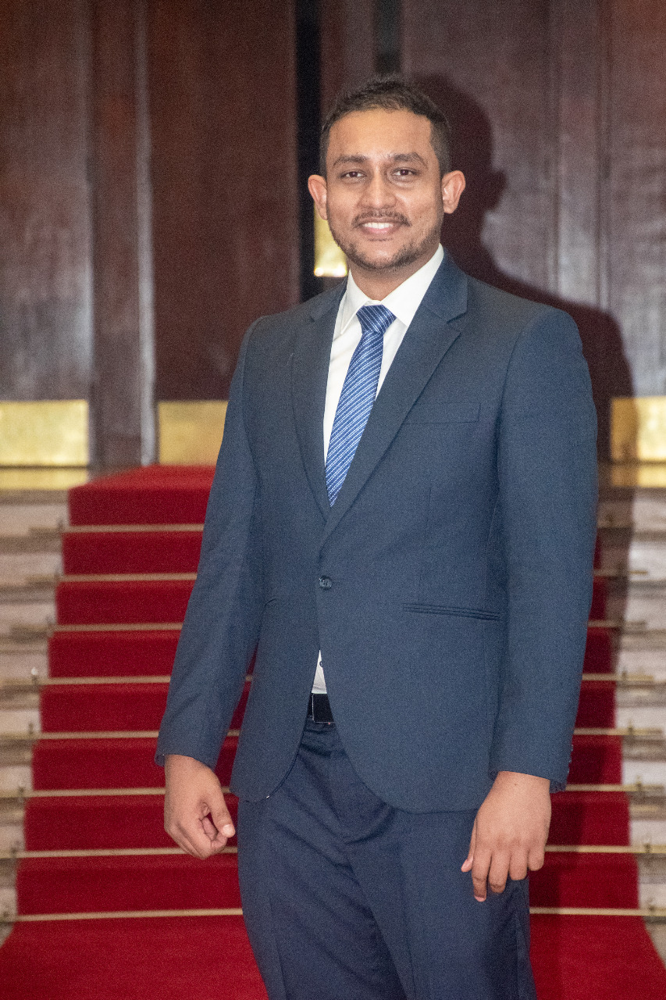

Manoj Herath
Postdoctoral Researcher at Orange Innovation
I am a researcher working on Digital Twins, Cloud-Edge-IoT systems, software architecture, model-driven engineering, and intelligent distributed systems.
I am currently a Postdoctoral Researcher at Orange Innovation in Grenoble, France. My research focuses on architecture description languages, runtime models, interoperability, and distributed systems across the Cloud-Edge-IoT continuum.
Research Interests
News
Joined Orange Innovation as a Postdoctoral Researcher in Grenoble, France.
Successfully defended my PhD thesis, Modeling and Deployment of Advanced Digital Twin Systems.
Published research on scalable and modular Digital Twin architectures, Edge-Cloud deployment, and AI-driven Digital Twin systems.
Presented research on modular Smart City Digital Twin architecture at CNSM 2024.